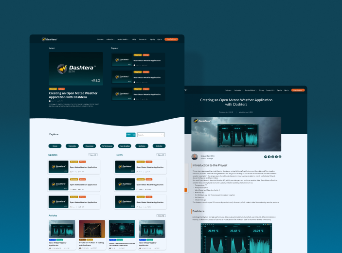

Web Design2025
Dashtera — Blog Design
Designed a responsive blog, focusing on intuitive navigation, clear content structure, and easy article discovery. Led the process from wireframes to implementation in collaboration with a team.
View case study